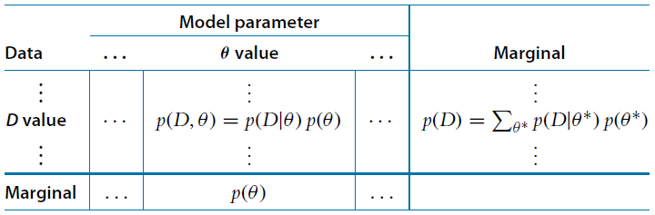
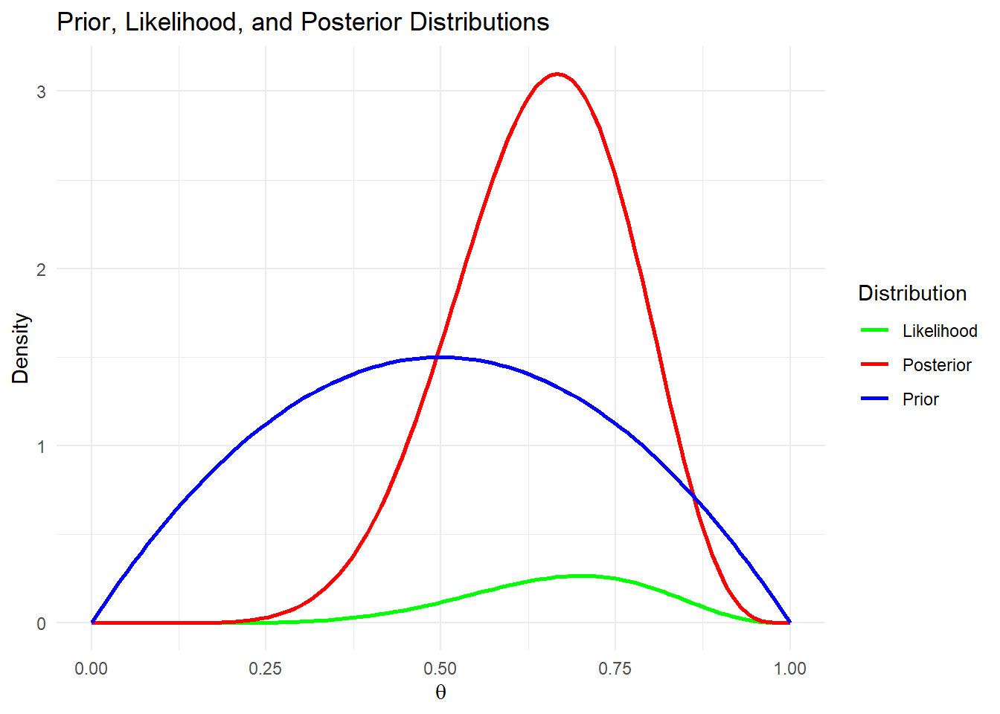
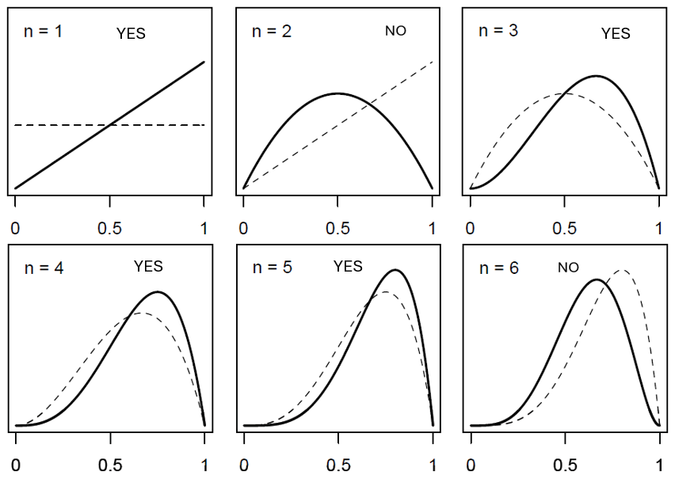

2 Bayesian Inference
2.1 Learnings
- Outcomes
– LO1: Explain the difference between Bayesian and frequentist concepts of statistical inference.
– LO2: Demonstrate how to specify and fit simple Bayesian models with appropriate attention to the role of the prior distribution and the data model.
– LO5: Engage in specifying, checking and interpreting Bayesian statistical analyses in practical problems using effective communication with health and medical investigators.
- Objectives
By the end of this week you should be able to:
– Describe Bayesian inference using probability distributions.
– Understand Bayesian learning.
– Draw DAG for Bayesian models.
– Formulate examples.
2.2 Inference
Bayesian inference is a method of statistical inference that updates the probability of a hypothesis \((H)\) as more evidence or data \((D)\) becomes available. It is based on Bayes’ theorem that we describe in our last lecture, where prior beliefs are updated with data. Following out previous lecture, if we denote \(Pr(H)\) as the probability of initial belief about \(H\) before seeing data, we can write the updated belief about \(H\) given the data \(D\) as:
\[ Pr(H|D) = \frac{Pr(D|H)\times Pr(H)}{Pr(D)} \]
where, \(Pr(D)\) is the probability of the data under all possible hypotheses.
In today’s lecture we will learn to the development of Bayesian model using probability distributions that incorporates Bayes throrem.
2.3 Bayesian Models
We have explained Bayes’ rule in our previous lecture, now we will see how Bayes rule can be structured for model development using parameter and data. In a Bayesian model, a parameter is a quantity that we assume is uncertain and assign a probability distribution to it. Unlike in frequentist statistics, where parameters are fixed but unknown, Bayesian statistics treats parameters as random variables with their own probability distributions.
Let us denote \(\theta\) as the parameter and \(D\) as data. Hence, we write a model using the data likelihood \(p(D|\theta)\), and prior distribution \(p(\theta)\) of the model parameter \(\theta\) (note that we have changed the notation from \(Pr(.)\) to \(p(.)\), where \(Pr(.)\) refers to probability and \(p(.)\) refers to probability distribution):
\[ p(D|\theta) \times p(\theta) \]
Hence, Bayes rule can be used to understand the parameter values, given the data,, i.e.,
\[ p(\theta|D) \]
Thus, using the Dual-Factor table explained in previous lecture, we can write
Where, each cell of the table holds the joint probability density of the specific combination of parameter value \(\theta\) and data value \(D\), denoted \(p(D, \theta)\), and which we know can be algebraically re-expressed as \(p(D|\theta)\times p(\theta)\).
Thus, we write the Bayes rule for data and parameter model as:
\[ p(\theta|D) = \frac{p(D|\theta)\times p(\theta)}{p(D)}; \]
where,
\[\begin{align} p(D) &= \sum_{\theta^*} p(D|\theta^*) p(\theta^*); \quad \text{ if discrete}; \\ p(D) &= \int p(D|\theta^*) p(\theta^*) \text{d}\theta^*; \quad \text{ if continuous}; \end{align}\]
Here, \(p(\theta)\) is the prior information about \(\theta\) without observing data; \(p(D|\theta)\) is the likelihood, i.e., data could be generated with model parameter \(\theta\); and \(p(D)\) is the marginal likelihood obtained from data by averaging across all possible parameters.
The posterior distribution of \(\theta\) is:
\[ p(\theta|D) = \text{ Credibility of }\theta\text{ based on data and evidence} \]
The posterior probability distribution \(p(\theta|D)\) is the main goal of Bayesian inference. The posterior distribution summarises our uncertainty over the value of a parameter. If the distribution is narrower, then this indicates that we have greater confidence in our estimates of the parameter’s value, and this can be obtained by collecting more data.
We will now explore with examples on obtaining posterior distributions of the model parameter \(\theta\) for different data distributions (i.e., models), e.g., binomial, normal and poisson distributions.
2.4 Model with Binary Variable
Suppose we have a binary observation i.e., can take values either 0 or 1, which follows Bernoulli distribution with parameter \(\theta\). We already know that for \(n>1\) number of trials the Bernoulli distribution yields a Binomial distribution. Considering \(Y\) as the random variable of number of successes in \(n\) trials for the Binomial distribution, we can write:
\[ p(Y=y|\theta) = \begin{pmatrix}n\\y \end{pmatrix} \theta^y (1-\theta)^{n-y} \]
This also represents the likelihood of a Bernoulli variable.
Now, if we consider a Beta prior distribution for \(\theta\) with hyper-parameters \(a\) and \(b\) (i.e., shape parameters of Beta distribution), then we can write the probability density function of the prior distribution as:
\[ p(\theta) = \frac{\theta^{a-1}(1-\theta)^{b-1}}{B(a,b)} \]
where, \(B(a,b)=\frac{\Gamma(a)\Gamma(b)}{\Gamma(a+b)}\) is the beta function. Thus, using Bayes theorem we write
\[ p(\theta|y) = \frac{\begin{pmatrix}n\\y \end{pmatrix} \theta^y (1-\theta)^{n-y}\times \theta^{a-1}(1-\theta)^{b-1}}{p(y)\times B(a,b)} \]
With some simple calculations, we can write the marginal likelihood as:
\[ p(y) = \begin{pmatrix}n\\y \end{pmatrix}\frac{B(y+a,n-y+b)}{B(a,b)} \]
Hence, we get the analytical form of the posterior distribution of \(\theta\) as:
\[ p(\theta|y) = \frac{\theta^{y+a-1}(1-\theta)^{n-y+b-1}}{B(y+a,n-y+b)} \]
which follows a Beta distribution with parameters \((a+y)\) and \((b+n-y)\).
Example:
Let us explain this with the type-2 diabetes example we discussed earlier. Now, the medical practitioner is trying to estimate the probability that a patient has type-2 diabetes \(\theta\) based on both prior knowledge and a new diagnostic test result.
Before any test, the medical practitioner relies on existing medical data. Suppose past research suggests that for a certain risk group the probability of having type-2 diabetes is 0.5. We represent this belief using a \(Beta(a=2,b=2)\). This prior suggests that while any probability is possible, \(\theta\) is likely to be around 0.5, with room for updating.
Now, we assume the test result corresponds to 7 positive cases out of 10 tests, meaning, \(n=10\) and \(y=7\).
Hence, we get the posterior distribution of medical practitioner’s new belief about the probability of the patient having the disease as: \(Beta(2+7,2+3)=Beta(9,5)\).
We can see from the density plots, the posterior shifts toward higher probabilities of type-2 diabetes, meaning the medical practitioner is now more confident that the patient may have type-2 diabetes.
Code
library(ggplot2)
a_prior <- 2
b_prior <- 2
n <- 10
y <- 7
a_post <- a_prior + y
b_post <- b_prior + (n - y)
theta <- seq(0, 1, length.out = 100)
prior_density <- dbeta(theta, a_prior, b_prior)
likelihood <- dbinom(y, size = n, prob = theta)
posterior_density <- dbeta(theta, a_post, b_post)
data <- data.frame(
theta = rep(theta, 3),
density = c(prior_density, likelihood, posterior_density),
Distribution = rep(c("Prior", "Likelihood", "Posterior"), each = length(theta))
)
ggplot(data, aes(x = theta, y = density, color = Distribution)) +
geom_line(size = 1) +
labs(title = "Prior, Likelihood, and Posterior Distributions",
x = expression(theta),
y = "Density") +
theme_minimal() +
scale_color_manual(values = c("green","red","blue"))
2.5 Bayesian Odds
We can also think of the Bayesian approach in terms of odds, such as what odds should I assign to an event or hypothesis. The simple definition of odds can be written as:
\[ \text{Odds of an event} = \frac{Pr(\text{event})}{1-Pr(\text{event})} \] which represents the ratio between the occurrence of an event and its non-occurrence.
Let’s revisit the medical practitioner example from our first lecture to clarify this concept. Imagine the practitioner assessing a patient for diabetes. Initially, they have a prior belief about the patient’s likelihood of having the condition. After conducting a blood test that reveals elevated sugar levels, this new evidence increases the probability of diabetes. The practitioner then updates their belief accordingly, refining their assessment based on the test results. We wanted to know, given this experimental evidence, how sure are the medical practitioner that their guess about the diabetes is accurate?
Thus, to reflect the medical practitioner example by Bayesian odds, we write:
\[ \text{Odds}(\text{G=[+]}|\text{E=[+]}) = \text{Odds}(\text{G}) \times \frac{Pr(\text{E=[+]}|\text{G=[+]})}{Pr(\text{E=[+]}|\text{G=[-]})} \]
where, \(\text{Odds}(\text{G=[+]}|\text{E=[+]})\) is the odds of the guess is correct given the evidence, and \(\text{Odds}(\text{G})\) is the odds of the guess that we define:
\[ \text{Odds}(\text{G}) = \frac{Pr(\text{G=[+]})}{Pr(\text{G=[-]})} \]
and \(\frac{Pr(\text{E=[+]}|\text{G=[+]})}{Pr(\text{E=[+]}|\text{G=[-]})}\) is the ratio of evidence under the guess \(\text{G}\).
This reflects
\[ \text{posterior or updated odds} = \text{prior or initial odds}\times \text{relative explanatory power} \]
This explains that evidence (i.e., data/information) always changes the outcome, which could be probability, probability distributions or odds or any other outcome of interest.
Example
Let us explain this again with the type-2 diabetes example, where based on the patient’s age, family history, and some initial symptoms, the medical practitioner guessed that there’s a 20% chance the patient has diabetes. This belief is a prior probability. The odds from of this probability is:
\[ \text{Odds}(\text{G}) = \frac{0.2}{0.8} = 0.25 \]
So, the prior odds of the patient having diabetes are 1:4 (one in four) guessed by the medical practitioner.
The blood test result shows elevated sugar levels. To assess how much this result affects our belief, we use the ratio of evidence under the guess \(\text{G}\) (also known as the likelihood ratio).
Suppose the medical practitioner has historically observed from boold test that 85% of diabetic patients have elevated sugar levels, while only 10% of non-diabetic patients do (e.g., due to other factors). Hence, we write
\[ \frac{Pr(\text{E=[+]}|\text{G=[+]})}{Pr(\text{E=[+]}|\text{G=[-]})} = \frac{0.85}{0.10} = 8.5 \]
This means the test result (elevated sugar) is 8.5 times more likely in someone with diabetes than in someone without it.
Now, the posterior odds
\[ \text{Odds}(\text{G=[+]}|\text{E=[+]}) = 0.25 \times 8.5 = 2.125 \]
So, the updated odds is 2.125:1, i.e., the patient is 2.125 times more likely to have diabetes than non-diabetic individuals after considering the test result.
Using the well known relationship between odds and probability, we can also get back the posterior probability from the posterior odds as:
\[ Pr(\text{G=[+]}|\text{E=[+]}) = \frac{\text{Odds}(\text{G=[+]}|\text{E=[+]})}{1+\text{Odds}(\text{G=[+]}|\text{E=[+]})} = \frac{2.125}{1+2.125} = 0.68 \]
In summary we write, before the test, the medical practitioner believed there was a 20% chance of diabetes. After seeing the elevated blood sugar result, the probability increased to 68% (compare the example in lecture 1), because the test result is 8.5 times more likely in diabetic than non-diabetic individuals. The practitioner may now recommend further tests (e.g., an HbA1c test) before confirming the diagnosis.
2.6 Bayesian Language
We will learn a common language for illustrating and denoting the Bayesian models. This will help us to develop and write complex Bayesian models in a simpler way that we will learn later in this course.
Let’s explain this using a Bernoulli model with parameter \(\theta\). Let \(x\) be the random variable that follows Bernoulli distribution. If we have \(n\) number of independent observations \((x_1,\ldots,x_n)'\), then denoting \(y=\sum_i^n x_i\) we write the likelihood function as:
\[ \prod_i^n \theta^{x_i} (1-\theta)^{1-x_i} = \theta^{\sum_i^n x_i} (1-\theta)^{\sum_i^n (1-x_i)} = \theta^y (1-\theta)^{n-y} \]
which we can write in the form of a Binomial distribution:
\[ p(y|\theta) \propto \theta^y (1-\theta)^{n-y} \]
Note that we replaced “=” with “\(\propto\)” as the term \(\begin{pmatrix}n\\y \end{pmatrix}\) is a constant, which does not depend on the parameter \(\theta\). Now, considering prior conjugacy, we assume that \(\theta\) follows a Beta distribution with shape parameters \(a\) and \(b\) and we write \(\theta \sim \text{Beta}(a,b)\) and define
\[ p(\theta) \propto \theta^{a-1}(1-\theta)^{b-1} \]
Thus, the posterior distribution of \(\theta\) can be written as \(\theta|y \sim \text{Beta}(a+y,b+n-y)\) and defined as:
\[ p(\theta|y) \propto \theta^y (1-\theta)^{n-y}\theta^{a-1}(1-\theta)^{b-1} \]
\[ p(\theta|y) \propto \theta^{y+a-1} (1-\theta)^{n-y+b-1} \]
We have again included the “\(\propto\)” term, as we will learn in our next two lectures that the marginal distribution of the data, i.e., \(p(y)\) does not depend on the model parameter and can therefore be omitted when obtaining the posterior distribution.
2.7 Directed Acyclic Graph (DAG)
The directed acyclic graph (DAG) is a graphical representation that illustrates the relationships and dependencies between different variables and parameters in a model. In a DAG, nodes represent variables/parameters, and directed edges indicate dependency relationships, pointing from one node to another. The acyclic nature ensures that there are no closed loops, maintaining a clear directionality of influence from parent nodes to child nodes.
Bayesian models
In the context of Bayesian modelling, DAGs are crucial as they visually provides the conditional dependencies between variables and model parameters, which enables a structured and intuitive approach to understand uncertainty and dependencies from the model.
Using the model with binary observations, we write a DAG as:
This is a simple graphical model, where \(y\) depends on \(\theta\), with \(\theta\) being a logical function of hyper-parameters \(a\) and \(b\).
2.8 More Examples
2.8.1 Decision Making
Here, we will explore how Bayesian method can provide more insights compared to the frequentist approach for decision making with same information.
Let us assume that we have a population of patients, and in this population, the prevalence of a certain disease is either 10% or 20%. As a researcher you need to determine whether the true prevalence of the disease is 10% or 20%.
You are being asked to make a crucial decision, and if you make the correct determination, your research funding is renewed.
Hence, you conduct diagnostic tests on randomly selected patients from the population. Each test costs $200, and you must purchase tests in increments of $1,000 (5 tests at a time). You have a total budget of $4,000, meaning you can test 5, 10, 15, or 20 persons.
The cost of making an incorrect decision is high, as it could lead to misinformed healthcare policies or ineffective treatment strategies. However, conducting tests is also expensive, so you don’t want to spend more than necessary.
Suppose you observe one person with the disease in a sample size of 5, two persons in a sample size of 10, three persons in a sample size of 15, and four persons in a sample size of 20.
Fequentists Method
Based on the scenario we write the null \((H_0)\) and alternative \((H_1)\) hypotheses as:
\(H_0\): \(10\)% prevalence \(H_1\): \(>10\)% prevalence
p-value based on 5 samples:
\[ Pr(y\ge 1|n=5,p=0.10)=1-Pr(y= 0|n=5,p=0.10)=1-0.9^{5}\approx 0.41 \]
Note that the p-value represents the probability of observing the given results - or more extreme ones - assuming the null hypothesis is true.
Therefore, we fail to reject \(H_0\) and conclude that the data do not provide convincing evidence that the prevalence of the disease is greater than 10%. This means that if we had to choose between a disease prevalence of 10% or 20%, even though this hypothesis test does not confirm the null hypothesis, we would likely stick with 10%, since we did not find sufficient evidence to suggest a higher prevalence.
Bayesian Method
From Bayesian perspective we can write:
\(H_0\): 10% prevalence \(H_1\): 20% prevalence
We can also assume that priors related to the hypothesis same and equal, i.e, \(Pr(H_0)=Pr(H_1)=0.5\).
Considering the scenario with 5 samples, we write the likelihood for \(H_0\) and \(H_1\) as:
\[ Pr(y=1|H_0) = \begin{pmatrix} 5 \\ 1 \end{pmatrix} \times 0.1 \times 0.9^{4} \approx 0.33 \]
\[ Pr(y=1|H_1) = \begin{pmatrix} 5 \\ 1 \end{pmatrix} \times 0.2 \times 0.8^{4} \approx 0.41 \]
We get the posterior probability for \(H_0\) as:
\[ Pr(H_0|y=1) = \frac{Pr(y=1|H_0)\times Pr(H_0)}{Pr(y=1)}=\frac{0.5\times 0.33}{0.5\times 0.33+0.5\times 0.41} \approx 0.45 \]
and for \(H_1\) as:
\[ Pr(H_1|y=1) = 1- 0.45 = 0.55 \]
The posterior probabilities of \(H_0\) and \(H_1\) are close to each other. As a result, with equal priors and a low sample size, it is difficult to make a decision with strong confidence based on the observed data. However, \(H_1\) has a higher posterior probability than \(H_0\), so if we had to make a decision at this point, we should choose \(H_1\), meaning the disease prevalence is 20%. Note that this decision contradicts the conclusion reached using the frequentist approach.
We can write this example using a DAG, where we can represent the relationships between the prior probabilities, likelihoods, and posterior probabilities.
Hypothesis (H₀ and H₁): These represent the two possible prevalence values (10% for H₀, 20% for H₁).
Data (y): The observed data (the number of successes in 5 samples, e.g., the presence of disease).
Likelihoods (Pr(y=1|H₀) and Pr(y=1|H₁)): The likelihood of observing the data under each hypothesis.
Prior Probabilities (Pr(H₀) and Pr(H₁)): The prior belief about the hypotheses (both have a prior probability of 0.5).
Posterior Probabilities (Pr(H₀|y=1) and Pr(H₁|y=1)): The updated belief about the hypotheses after observing the data.
Code
library(DiagrammeR)
dag <- grViz("
digraph bayesian_dag {
# Define the nodes
node [shape = rectangle, fontname = 'Helvetica', fontsize = 14]
H0 [label = 'H₀: 10% prevalence', width = 1.5]
H1 [label = 'H₁: 20% prevalence', width = 1.5]
y [label = 'y: Data (Successes in 5 samples)', width = 1.5]
PrH0 [label = 'Pr(H₀) = 0.5', width = 1.5]
PrH1 [label = 'Pr(H₁) = 0.5', width = 1.5]
LikelihoodH0 [label = 'Pr(y|H₀) ~ 0.33', width = 1.5]
LikelihoodH1 [label = 'Pr(y|H₁) ~ 0.41', width = 1.5]
PosteriorH0 [label = 'Pr(H₀|y=1) ~ 0.45', width = 1.5]
PosteriorH1 [label = 'Pr(H₁|y=1) ~ 0.55', width = 1.5]
# Define the edges (relationships)
PrH0 -> LikelihoodH0
PrH1 -> LikelihoodH1
H0 -> LikelihoodH0
H1 -> LikelihoodH1
LikelihoodH0 -> y
LikelihoodH1 -> y
y -> PosteriorH0
y -> PosteriorH1
}
")
dagNow, we can summarise the results for all four seperate sample sizes using frequentist p-value and Bayesian methods, where
Frequentist
\(H_0\): 10% prevalence and \(H_1\): \(>10\)% prevalence
\(Pr(y \text{ or more} \mid 10\% \text{ prevalence})\) = p-value
Bayesian
\(H_0\): 10% prevalence and \(H_1\): 20% prevalence
Posterior for \(H_0\): \(Pr(10\% \text{ prevalence} \mid n, y)\)
Posterior for \(H_1\): \(Pr(20\% \text{ prevalence} \mid n, y)\)
And the results we get:
| Data | p-value | Posterior | |
|---|---|---|---|
| \(H_0\): 10% prevalence | \(H_0\): 10% prevalence | \(H_1\): 20% prevalence | |
| n = 5, y = 1 | 0.41 | 0.45 | 0.55 |
| n = 10, y = 2 | 0.26 | 0.39 | 0.61 |
| n = 15, y = 3 | 0.18 | 0.34 | 0.66 |
| n = 20, y = 4 | 0.13 | 0.29 | 0.71 |
In each of these scenarios, the frequentist approach produces a p-value higher than the significance level say 5%, leading us to fail to reject the null hypothesis for any of the samples. In contrast, the Bayesian method consistently assigns a higher posterior probability to the model where prevalence = 20%. As a result, the conclusions drawn from these two approaches are contradictory.
However, if we had structured the frequentist approach differently, say setting the null hypothesis as \(H_0\): 20% prevalence, we would have reached different conclusions.
This highlights the frequentist method’s sensitivity to the choice of the null hypothesis. In contrast, the Bayesian approach yields consistent results regardless of the order in which we evaluate the models.
2.8.2 Comparison of Two Means
Now, let us explain another example, where we want to find out if a new drug lowers systolic blood pressure (SBP) compared to standard of care (SOC).
The study involves two groups of patients: Group A (treatment group), where 10 patients are given the new medication, and Group B (control group), where 10 patients receive the standard of care (SOC), which includes existing medication for SBP.
After a period of four weeks, the SBP of all participants is recorded for analysis.
Now, we will use both the frequentist and Bayesian approaches to determine whether there are any differences between the treatment and SOC.
Frequentist
From the frequentist perspective, we wil test:
\(H_0\): There is no difference in mean SBP between the two groups.
\(H_1\): The treatment group has a different mean SBP than the SOC group.
Considering equal variance assumption, we use t-test as follows:
Code
group_A <- c(120, 118, 122, 115, 119, 117, 121, 116, 118, 119)
group_B <- c(130, 128, 135, 132, 129, 131, 134, 133, 137, 130)
t.test(group_A, group_B, var.equal = TRUE)
Two Sample t-test
data: group_A and group_B
t = -11.834, df = 18, p-value = 6.315e-10
alternative hypothesis: true difference in means is not equal to 0
95 percent confidence interval:
-15.77898 -11.02102
sample estimates:
mean of x mean of y
118.5 131.9 We can see that the p-value is extremely small (much less than 0.05), which means we reject the null hypothesis. Si, there is strong evidence that the new drug significantly reduces systolic blood pressure compared to the placebo.
Bayesian
Now, we will use Bayesian approach to estimate the posterior probability distribution of the difference in mean systolic blood pressure between the treatment and SOC groups, and extract a 95% credible interval.
In most scenarios, we do not have prior information regarding the effectiveness of the new drug. However, sometimes we do have prior knowledge about the effectiveness of the SOC. Let us assume that, from a past study with 15 patients, for the SOC group, after a period of four weeks, the average SBP is around 110 mmHg with a variance of 25. This constitutes our prior knowledge about the control/SOC group.
Now, using these information we can get the posterior distributions for both groups and then compare their differences. Note that our variable of interest in this example is in continuous scale (SBP measured in mmHg), hence, we will use normal distributions for the SBP.
Here, we have observe data from 10 individuals for each groups. The posterior mean and variance calculation involves combining prior and observed data for the SOC (control) group, i.e., Group B. Whereas, for the treatment group we do not have any prior knowledge, i.e., the posterior for this group will reflect the observed data. Then we calculate the posterior mean and variance for the difference in means and extract the 95% credible interval for the difference.
We can write this mathematically as follows:
- \(\mu_A\): True mean SBP of treatment group
- \(\mu_B\): True mean SBP of SOC group
- \(\delta = \mu_A - \mu_B\): Difference in means, this is our parameter of interest
For observed data, Groups A (treatment) and B (SOC) with observed sample sizes \(n_A = n_B = 10\), we get observed means \(\bar{x}_A\), \(\bar{x}_B\), and variances \(s_A^2\), \(s_B^2\).
We will model SBP as Normally distributed:
- \(X_A \sim N(\mu_A, \sigma^2_A)\)
- \(X_B \sim N(\mu_B, \sigma^2_B)\)
Now, prior information on Group B, that we get from a previous study, where \(\mu_{B,0} = 110\), and prior variance \(\sigma^2_{B,0} = 25\) from sample size \(n_{B,0} = 15\).
For the treatment group (i.e., A), we get the posterior distribution as:
\[ \mu_A \mid \text{data} \sim N\left( \bar{x}_A, \frac{s_A^2}{n_A} \right) \]
Now, for the SOC group (i.e., B) we write the prior
\[ \mu_B \sim N\left( \mu_{B,0}, \frac{\sigma_{B,0}^2}{n_{B,0}} \right) \]
Hence, with observed data \(\bar{x}_B\) from \(n_B = 10\) samples, the posterior becomes:
\[ \mu_B \mid \text{data} \sim N\left( \mu_{B,\text{post}}, \sigma^2_{B,\text{post}} \right) \]
Where with simple calculation we write:
\[ \mu_{B,\text{post}} = \frac{ \frac{n_{B,0}}{\sigma^2_{B,0}} \mu_{B,0} + \frac{n_B}{s_B^2} \bar{x}_B }{ \frac{n_{B,0}}{\sigma^2_{B,0}} + \frac{n_B}{s_B^2} } \]
and
\[ \sigma^2_{B,\text{post}} = \left( \frac{n_{B,0}}{\sigma^2_{B,0}} + \frac{n_B}{s_B^2} \right)^{-1} \]
Now, we get the posterior for difference in means assuming independence between \(\mu_A\) and \(\mu_B\) as:
\[ \delta = \mu_A - \mu_B \sim N(\mu_{\delta}, \sigma^2_{\delta}) \]
Where,
\[ \mu_{\delta} = \mu_{A,\text{post}} - \mu_{B,\text{post}} = \bar{x}_A - \mu_{B,\text{post}} \]
and
\[ \sigma^2_{\delta} = \sigma^2_{A,\text{post}} + \sigma^2_{B,\text{post}} = \frac{s_A^2}{n_A} + \sigma^2_{B,\text{post}} \]
Finally, we can calculate the 95% credible interval of \(\delta\) from its posterior distribution.
Code
mu_prior_B <- 110
var_prior_B <- 25
n_prior_B <- 15
n_B <- length(group_B)
mean_B <- mean(group_B)
var_B <- var(group_B)
n_A <- length(group_A)
mean_A <- mean(group_A)
var_A <- var(group_A)
mu_post_B <- (n_B * mean_B + n_prior_B * mu_prior_B) / (n_B + n_prior_B)
var_post_B <- var_B / n_B
mu_post_A <- mean_A
var_post_A <- var_A / n_A
mean_diff <- mu_post_A - mu_post_B
var_diff <- var_post_A + var_post_B
sd_diff <- sqrt(var_diff)
credible_interval <- c(mean_diff - 1.96 * sd_diff, mean_diff + 1.96 * sd_diff)
cat("Posterior mean difference in SBP:", round(mean_diff,2), "\n")Posterior mean difference in SBP: -0.26 Code
cat("95% credible interval for difference in SBP:", round(credible_interval,2), "\n")95% credible interval for difference in SBP: -2.48 1.96 The results shows, on average, the treatment group has a slightly lower SBP than the SOC group, just 0.26 mmHg lower, which is a very small difference. We can also see the 95% credible interval spans both negative and positive values, including zero, we can’t say with confidence whether the treatment lowers, increases, or has no effect on SBP.
This result from Bayesian analysis again contradicts with the frequentist method due to the consideration of prior information related to the SOC in the analysis.
We will explore more about how different prior information might influence our results throughout the course.
Note that in this example, we incorporate prior information as past data and thus update the posterior, which is in line with the Bayesian philosophy. It is also important to note that we might arrive at the same conclusion using a frequentist method, if we consider these historical data from \(n_{B,0}\) samples.
In the following section, we discuss more on this type of Bayesian update accordingly.
2.9 Bayesian Updating
Suppose we observe some data \(D_1\) and update our posterior belief \(p(\theta|D_1)\) based on prior \(p(\theta)\). Now, if we observe some more data, say \(D_2\), then can update our belief from \(p(\theta|D_1)\) to \(p(\theta|D_1,D_2)\). We can explain the Bayesian updating using a step-by-step process.
For example, we want to know the more about the severe side effects of an antibacterial drug. Here, we are considering the variable as either the drug has side effect or not. Initially, we might not know anything about the drug, in this case we do not have a prior information. Now we start to observe or collect data and can see the following patterns of the probabilities related to side effects.

This figure illustrates how our understanding of the probability of severe side effects from an antibacterial drug evolves as we collect more data. The x-axis represents the probability of side effects, while the y-axis represents the density of this probability distribution. The solid lines in each plot represent our updated belief based on collected data, whereas the dashed lines represent our prior belief before incorporating the new data. As we observe more cases, our confidence in estimating the probability of side effects changes dynamically.
In the first plot (n = 1, YES), we have only one observation, meaning we have very little information to work with. The probability distribution is relatively simple and does not strongly favor any particular probability value. Since the first observed case showed side effects, the probability of severe side effects starts increasing. In contrast, in the second plot (n = 2, NO), the second observation indicates no side effects, which alters our belief and introduces more uncertainty. The probability distribution now has a curved shape, reflecting this new piece of evidence.
As more data points are collected (n = 3, YES and n = 4, YES), our probability distribution starts forming a clearer peak. This means that we are beginning to refine our estimate of how likely the drug is to cause severe side effects. By n = 5 (YES), the probability distribution has a well-defined peak, indicating that we are gaining confidence in our estimate. However, in n = 6 (NO), the introduction of a new negative observation (no side effects) shifts our belief again. This suggests that the probability of side effects is not as high as previously estimated, and our model adjusts accordingly.
Code
library(DiagrammeR)
dag <- grViz("
digraph bayesian_dag {
# Define the nodes
node [shape = rectangle, fontname = 'Helvetica', fontsize = 14]
# Prior node
Prior [label = 'Prior p(θ)', width = 1.5]
# Data observations
D1 [label = 'D₁: Observation (YES)', width = 2]
Dots [label = '...', width = 0.5]
D6 [label = 'D₆: Observation (NO)', width = 2]
# Posterior updates
Posterior_D1 [label = 'Posterior p(θ|D₁)', width = 2]
Posterior_D6 [label = 'Posterior p(θ|D₁, ..., D₆)', width = 2]
# Define the edges (relationships)
Prior -> D1
D1 -> Posterior_D1
Posterior_D1 -> Dots
Dots -> D6
D6 -> Posterior_D6
# Layout: top to bottom style
rankdir = TB
}
")
dagInvariance to data-order
This Bayesian learning process for \(\theta\) is very intuitive, where we can write
\[\begin{align} p(\theta|D_1,D_2) = \frac{p(D_1,D_2|\theta)\times p(\theta)}{\sum_{\theta^*}p(D_1,D_2|\theta^*)\times p(\theta^*)} \end{align}\] If we consider \(D_1\) and \(D_2\) are independent, then \[\begin{align} p(D_1,D_2|\theta)=p(D_1|\theta)p(D_2|\theta) \end{align}\] This leads to a very simple formation of considering \[\begin{align} p(\theta|D_2,D_1) = \frac{p(D_2|\theta)\times p(\theta|D_1)}{\sum_{\theta^*}p(D_2,D_1|\theta^*)\times p(\theta^*)} \end{align}\]
This implies, under the independence condition, the order of Bayesian updating has no effect on the final posterior. Hence, going back to Figure above: we will get same final result (i.e., posterior probability of side effect) for considering all six observations.
2.10 Summary
Today’s lecture explored Bayesian inference, focusing on how to derive it analytically, we also learn Bayesian updating, posterior odds and Directed Acyclic Graphs (DAGs).
2.11 Live tutorial and discussion
The final learning activity for this week is the live tutorial and discussion. This tutorial is an opportunity for you to to interact with your teachers, ask questions about the course, and learn about biostatistics in practice. You are expected to attend these tutorials when possible for you to do so. For those that cannot attend, the tutorial will be recorded and made available on Canvas. We hope to see you there!
2.12 Tutorial Exercises
Solutions will be provided later after the tutorial.
2.13 Preparation for Week 3
Next week we will start Module 02 of this unit, where our main focus will be to understand different types of prior distributions and how they influence the posteriors.